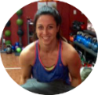

A grounded, kinesiology-first education that teaches you how to think like a practitioner. Eliminate chronic pain, rebuild functional mobility, and take permanent ownership of your health without generic workout burnout.
If you are over 35 and feel stiffer, more exhausted, or more injured after working out—the problem isn't your willpower. It's the outdated paradigm you've been handed.
Mainstream fitness apps and bootcamps treat human bodies like factory machines. High-impact routines designed for 20-year-olds destroy connective tissue, compress spinal discs, and trigger chronic joint inflammation.
When your lower back hurts, you stretch your lower back. But kinesiology proves that pain in one spot is almost always compensation for dysfunction elsewhere—tight hips, dormant glutes, or locked ankles.
You are conditioned to outsource your physical autonomy to quick fixes: painkillers, passive adjustments, or endless supplements. None of them teach you how your own kinetic chain and nervous system actually function.
My mission isn't just to give you another workout routine. It is to mentor you so deeply in functional movement and biological literacy that you never have to guess what your body needs ever again.
True health is an interconnected ecosystem. You cannot out-train systemic inflammation, and you cannot stretch away nervous system exhaustion.
 01
01
Master kinesiology principles, joint decompression, and rotational stability. We identify rotational imbalances and strengthen antagonist muscle groups to restore pain-free, fluid movement patterns.
Move past dogmatic diets and calorie counting. Learn how to fuel mitochondrial energy, heal the gut microbiome, and actively flush systemic inflammation so your soft tissues can regenerate naturally.
 03
03
Chronic muscular tension is often locked sympathetic overdrive. We incorporate practical somatic breathwork, vagus nerve stimulation, and stress down-regulation to shift your body out of fight-or-flight into repair.
 04
04
Growth and repair happen when the body is in genuine rest. Reclaim restorative deep sleep, align your biology with natural light cycles, and deploy myofascial decompression routines to keep connective tissue supple.
 FREE 12-PAGE PDF
FREE 12-PAGE PDF
Download George's field guide: "Create the Perfect Workout." Learn the exact 5-step movement diagnostic to test your own joint mobility before lifting a single weight or starting a workout.
Everything you need to step out of confusion and build a resilient, pain-free body with ongoing expert mentorship.
Direct weekly Q&A access with George Chountalos. Bring your movement questions, form videos, and health obstacles for personalized coaching.
Begin with the Comprehensive Four Pillars Self-Assessment. Follow structured, progressive educational modules at your own pace from home or gym.
Detailed video libraries of kinesiology corrective routines, rotational hip openers, thoracic spine mobilizations, and core stabilizing sequences.
Connect with a dedicated tribe of adults committed to holistic longevity, self-sufficiency, and genuine vitality in a distraction-free space.
Measurable functional benchmarks to track joint mobility gains, posture alignment improvements, pain reduction, and sleep quality scores.
Seamlessly access your videos, routines, and community discussions from your desktop, tablet, or phone via GoHighLevel's clean member app.

Hi, I’m George Chountalos. Over the past two decades, I’ve worked with thousands of everyday people, high-performing executives, and athletes. In the early days of my career, I ran the standard gym playbook: high repetitions, generic splits, and telling clients to "push through the pain."
Then I watched clients—and myself—hit the wall. Torn tissues, recurring sciatica, chronic systemic inflammation, and deep frustration. That breakdown forced me to dive deep into kinesiology, neuromuscular repatterning, and the biological foundations of health.
Being of Earth was born from that shift. I created this academy to bridge the gap between complex clinical kinesiology and your daily life. I believe true vitality belongs to you, not a doctor or a fitness company. Let me teach you how to read your body’s signals so you can thrive for decades to come.
Read how members eliminated chronic pain and reclaimed their physical confidence.

“Years of desk work and aggressive lifting had my lower back completely seized up. George didn't give me generic stretches; he showed me how my hip rotation was completely turned off. Within three weeks, my pain vanished and my posture transformed.”

“I spent thousands on physical therapy and chiropractic care for impinged shoulders. George’s kinesiology protocols taught me how to stabilize my scapula properly. Being of Earth is the best health investment I've ever made.”

“The Four Pillars framework changed how I view my entire daily life. Combining nervous system breathwork with George’s anti-inflammatory guidelines cleared my brain fog and gave me sustained energy all day.”
Master your movement, restore your biological vitality, and coach yourself for life.
That is exactly who this program is built for. Unlike conventional fitness routines that push you past pain thresholds, Being of Earth begins with gentle kinesiology assessments to locate your specific mechanical compensations and decompress compromised joints safely.
Just 15 to 25 minutes a day. The protocols are designed to integrate effortlessly into your morning routine or evening wind-down without exhausting your schedule.
When you enroll, you gain instant, unrestricted access to the entire curriculum, video library, and weekly coaching calls. If it’s not the best health education you’ve ever experienced, simply cancel before day 14 in your member dashboard with one click, and you will never be charged.
No. 90% of our movement sequences utilize bodyweight, ground connection, simple resistance bands, and common household items (like a wall, floor, or chair).
You will receive an automated welcome email with your direct login credentials to our dedicated member portal at go.beingofearth.com.